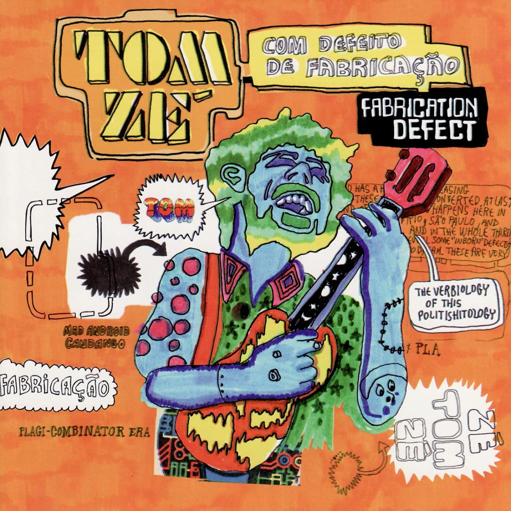

Com Defeito de Fabricação (1998)
Tom Zé
Published under David Byrne's Luaka Bop label, "Com Defeito de Fabricação" (Fabrication Defect) is a concept album about third worlders, their transformation into "androids" via economical exploitation, and, more importantly, the "defects"—thinking, dancing, dreaming—that make them dangerous in the eyes of their first world overlords.
Tom Zé performing. Photo by Sergio SavareseOn the back cover, Tom Zé wrote a small "essay" explaining the main compositional idea behind the record, which you may find transcribed at the bottom of this page.
T/L Note: For this song, note that the word for "[he/she/it] lies" and "mind" are the same in Portuguese. Tom Zé loves writing lyrics that play with the Portuguese language, or that really only sound interesting rather than make any sense, which is seen throughout this entire album
00:18
We lie as soon as in our genes
A gente já mente no gene
00:20
The mind of our genes
A mente do gene da gente
00:22
We lie as soon as in our genes
A gente já mente no gene
00:25
The mind of our genes
A mente do gene da gente
00:27
Do your prayers once a day
Faça suas orações uma vez por dia
00:32
And after send your conscience
Depois mande a consciência
00:33
Together with the sheets to the wash
Junto com os lêncois pra lavanderia
00:36
Do your prayers once a day
Faça suas orações uma vez por dia
00:41
And after send your conscience
Depois mande a consciência
00:42
Together with the sheets to the wash
Junto com os lêncois pra lavanderia
(instrumental)
01:39
We lie as soon as in our genes
A gente já mente no gene
01:42
The mind of our genes
A mente do gene da gente
01:44
We lie as soon as in our genes
A gente já mente no gene
01:46
The mind of our genes
A mente do gene da gente
01:49
We lie as soon as in our genes
A gente já mente no gene
01:50
The mind of our genes
A mente do gene da gente
01:53
We lie as soon as in our genes
A gente já mente no gene
01:55
The mind of our genes
A mente do gene da gente
00:15
Who's placing dynamite
Quem é que tá botando dinamite
00:26
On the head of the century?
Na cabeça do século?
00:30
Who's placing dynamite
Quem é que tá botando tanto piolho
00:38
On the head of the century?
Na cabeça do século?
00:46
Who's putting so many crickets
Quem é que tá botando tanto grilo
01:02
On the head of the century?
Na cabeça do século?
01:03
Who finds a pillow
Quem é que arranja um travesseiro
01:10
For the head
Pra cabeça
(instrumental)
02:56
Who finds a pillow
Quem é que arranja um travesseiro
02:04
For the head of the century?
Pra cabeça do século?
(instrumental)
03:12
For the head of the century?
Pra cabeça do século?
00:26
Son of a practice
Filha da prática
00:27
Son of a tactic
Filha da tática
00:28
Son of a machine
Filha da máquina
00:31
This shameless cave
Essa gruta sem vergonha
00:33
Of the entrails
Na entranha
00:34
Is always accommodating
Não estranha nada
00:38
Son of a practice
Filha da prática
00:39
Son of a tactic
Filha da tática
00:40
Son of a machine
Filha da máquina
00:43
This shameless cave
Essa gruta sem vergonha
00:44
Of the entrails
Na entranha
00:45
Is always accommodating
Não estranha nada
00:49
Shove your grandiosity
Meta sua grandeza
00:51
up the corner bank
No banco da esquina
00:54
Shove it up your verb
Vá tomar no verbo
00:57
You son of a letter
Seu filho da letra
00:59
Shove your usury
Meta sua usura
01:02
Up the multinational
Na multinacional
01:05
Shove it up your virgin
Vá tomar na virgem
01:07
You son of a cross
Seu filho da cruz
01:10
Shove your morals
Meta sua moral
01:12
Rules and regulations
Regras e regulamentos
01:15
Offices and neckties
Escritórios e gravatas
01:18
Your solemn sessions
Suas sessões solenes
01:21
Gather everything up
Pegue, junte tudo
01:23
Spread vaseline
Passe vaselina
01:26
Shove, push, cram it into
Enfie, soque, meta
01:29
Your gasoline tank
No tanque de gasolina
(instrumental)
01:56
Son of a practice
Filha da prática
01:57
Son of a tactic
Filha da tática
01:58
Son of a machine
Filha da máquina
02:01
This shameless cave
Essa gruta sem vergonha
02:03
Of the entrails
Na entranha
02:04
Is always accommodating
Não estranha nada
02:07
Son of a practice
Filha da prática
02:08
Son of a tactic
Filha da tática
02:09
Son of a machine
Filha da máquina
02:12
This shameless cave
Essa gruta sem vergonha
02:14
Of the entrails
Na entranha
02:15
Is always accommodating
Não estranha nada
T/L Note: This regards African culture, so, relevant Wikipedia excerpt: "An emere, in traditional Yoruba culture, is a child who can travel between the spiritual and physical world at will."
(instrumental)
00:25
In the lake of the eye
No lago do olho
00:26
By its side on the ooze
De lado no lodo
00:28
An eye on the side
De olho no lado
00:29
On the ooze of the lake
No lodo do lago
00:31
Tear sinks
Lágrima afunda
00:33
Deep mud
Profunda lama
00:50
In the lake of the eye
No lago do olho
00:52
By its side on the ooze
De lado no lodo
00:53
An eye on the side
De olho no lado
00:55
On the ooze of the lake
No lodo do lago
00:57
Tear sinks
Lágrima afunda
00:58
Deep mud
Profunda lama
01:27
Eye
Olho
01:29
Ooze
Lodo
01:31
Side
Lado
01:32
Lake
Lago
01:34
Mud
Lama
00:08
You think I'm a stupid caboclo fool
Pensa que eu sou um caboclo tolo boboca
00:11
Some sort of knuckleheaded tamarin
Um tipo de mico cabeça-oca
00:13
Rickety, a typical Jeca Tatu
Raquítico, típico Jeca Tatu
00:17
A mere number zero, just another joe
Um mero número zero, um zé à esquerda
00:19
Goof, pathetic, slow slug
Pateta, patético, lesma lerda
00:21
Automaton, goose, stupid, idiot
Autômato, pato, panaca, jacu
00:25
I think, I dismiss the mule from your view
Penso, dispenso a mula da sua ótica
00:29
Oh, go lick my intersemiotic translation
Ora, vá me lamber tradução intersemiótica
00:33
Hold on there milord, 'cause the baião mulatto
Se segura milord aí que o mulato baião
00:36
(Is "black tie"-ing himself )
(Tá se blacktaiando)
00:38
"Dinner jacket"-ing himself in the arrastão aesthetic
Smoka-se todo na estética do arrastão
00:42
Hold on there milord, 'cause the baião mulatto
Se segura milord aí que o mulato baião
00:44
(Is "black tie"-ing himself)
(Tá se blacktaiando)
00:46
"Dinner jacket"-ing himself in the arrastão aesthetic
Smoka-se todo na estética do arrastão
00:50
Tic aesthe tic aesthu
Ca esteti ca estetu
00:52
Tic aesthe tic aesthu
Ca esteti ca estetu
00:54
Tic aesthe tic aesthu
Ca esteti ca estetu
00:56
Tic aesthe tic aesthu
Ca esteti ca estetu
00:57
Tic aesthetic of plagiarism-iê
Ca estética do plágio-iê
01:02
Help, Suassuna!
Help, Suassuna!
01:06
Tic aesthe tic aesthu
Ca esteti ca estetu
01:08
Tic aesthe tic aesthu
Ca esteti ca estetu
01:10
Tic aesthe tic aesthu
Ca esteti ca estetu
01:12
Tic aesthe tic aesthu
Ca esteti ca estetu
01:14
Tic aesthetic of plagiarism-iê
Ca estética do plágio-iê
01:31
You think I'm a mad android candango
Pensa que eu sou um andróide, candango doido
00:33
Some soft mamulengo mongoloid
Algum mamulengo molenga mongo
01:35
Mere mameluco with some bolts loose
Mero mameluco da cuca lelé
01:39
Rag of guts from the lanky tribe
Trapo de tripa da tribo dos pele e osso
01:41
Strand of meat, thick cloth
Fiapo de carne, farrapo grosso
01:44
From the troupe of the riffraff and scant rabble
Da trupe da reles e rala ralé
01:47
I think, I dismiss the mule from your view
Penso, dispenso a mula da sua ótica
01:51
Oh, go lick my intersemiotic translation
Ora, vá me lamber tradução inter-semiótica
01:56
Hold on there milord, 'cause the baião mulatto
Se segura milord aí que o mulato baião
01:58
(Is "black tie"-ing himself)
(Tá se blacktaiando)
02:00
"Dinner jacket"-ing himself in the arrastão aesthetic
Smoka-se todo na estética do arrastão
02:04
Hold on there milord, 'cause the baião mulatto
Se segura milord aí que o mulato baião
02:06
(Is "black tie"-ing himself)
(Tá se blacktaiando)
02:08
"Dinner jacket"-ing himself in the arrastão aesthetic
Smoka-se todo na estética do arrastão
02:12
Tic aesthe tic aesthu
Ca esteti ca estetu
02:14
Tic aesthe tic aesthu
Ca esteti ca estetu
02:16
Tic aesthe tic aesthu
Ca esteti ca estetu
02:18
Tic aesthe tic aesthu
Ca esteti ca estetu
02:19
Tic aesthetic of plagiarism-iê
Ca estética do plágio-iê
02:27
Help, Tinhorão!
Help, Tinhorão!
02:29
Tic aesthe tic aesthu
Ca esteti ca estetu
02:31
Tic aesthe tic aesthu
Ca esteti ca estetu
02:33
Tic aesthe tic aesthu
Ca esteti ca estetu
02:35
Tic aesthe tic aesthu
Ca esteti ca estetu
02:36
Tic aesthetic of plagiarism-iê
Ca estética do plágio-iê
00:19
Dancing
Dançar
00:29
Dancing writes
Dançar escreve
00:31
A soft stroke
Um traço leve
00:34
The word of God, the alphabet
O verbo de Deus bê-á-bá
00:39
Taut skin
A pele tensa
00:41
Press paper
Papel-imprensa
00:44
The jaguar scroll
O pergaminho do jaguar
00:49
To step
Para pisar
00:51
Blows of air
Golpes de ar
00:54
Lines untangle
Desembaraçam-se linhas
00:59
Baste
Alinhavar
01:02
Passions and ouches
Paixões e ais
01:04
Diagonal agonies
Diagonais agonias
01:20
Oh girl that dances if
Ô menina que dança se
01:22
(You are)
(Você for)
01:24
PernambuCatarinAmaraliNatal
PernambuCatarinAmaraliNatal
01:28
I'll go as well
Também vou
01:30
Oh girl that dances if
Ô menina que dança se
01:33
(You are)
(Você for)
01:35
Que'sse cané de ou certá namô
Que'sse cané de ou certá namô
01:38
I'll go as well
Também vou
01:51
I'll walk with my feet
Andar com meu pé eu vou
02:00
And my feet will get used to dancing
Que o pé se acostuma a dançar
00:19
The reco-reco UN ONU
No reco-reco UN ONU
00:21
Teleco-teco ONU UN
Teleco-teco ONU UN
00:24
This pagode UN ONU
Nesse pagode UN ONU
00:27
That rock ONU UN
Naquele rock ONU UN
00:30
The UN to maintain the peace
Uma ONU pra manter a paz
00:32
And that group there, what group?
E a turma lá, que turma?
00:49
Produce deadly weapons
Fabrica armas mortais
00:51
Rifle, machine gun, cruiser
Fuzil, metralhadora, cruzador
00:54
In the esquindô esquindô dô
No esquindô esquindô dô
00:57
Bazooka, bomb, ravaging tank
Bazuca, bomba, tanque arrasador
00:59
In the esquindô esquindô dô
No esquindô esquindô dô
00:02
Wine of open legs
Vinho das pernas abertas
00:10
Wets the altar of offerings
Molha o altar das ofertas
00:18
Screams, sperm and handcuff
Gritos, esperma e algema
00:23
Fury of pure lavender
Fúria de pura alfazema
00:30
Of pure lavender
De pura alfazema
00:38
Moon on the room in heat—oh
Lua no quarto do cio—oh
00:44
Timid fruit, nudity—shame
Tímida fruta, nudez—pudor
00:50
Sneakers and teats, liquor—color
Tênis e tetas, licor—cor
00:56
Fear, hard to get, desire—fright
Medo, cu doce, querer—pavor
01:01
In youth all come as wild boars
Se na juventude já vem tudo javali
01:05
The courage of this coitus is something I've already seen there
O afoito desse coito é coisa que já lá vi
01:09
Seen there, seen there
Lá vi, lá vi
01:17
Bacchus, hole, curve, grapes I've already picked
Baco, buraco, curva, uva que já colhi
01:21
Meta-mycosis itches, It's every man for himself
Meta-micose coça, cada um cuide-se de si
01:24
For himself, for himself
De si, de si
01:36
Moon on the room in heat—oh
Lua no quarto do cio—oh
01:42
Timid fruit, nudity—shame
Tímida fruta, nudez—pudor
01:48
Sneakers and teats, liquor—color
Tênis e tetas, licor—cor
01:53
Fear, hard to get, desire—fright
Medo, cu doce, querer—pavor
01:59
In youth all come as wild boars
Se na juventude já vem tudo javali
02:03
The courage of this coitus is something I've already seen there
O afoito desse coito é coisa que já lá vi
02:07
Seen there, seen there
Lá vi, lá vi
02:15
Bacchus, hole, curve, grapes I've already picked
Baco, buraco, curva, uva que já colhi
02:18
Meta-mycosis itches, It's every man for himself
Meta-micose coça, cada um cuide-se de si
02:22
For himself, for himself
De si, de si
02:35
Moon on the room in heat—oh
Lua no quarto do cio—oh
02:41
Timid fruit, nudity—shame
Tímida fruta, nudez—pudor
00:00
I have so much fear in my chest
Tenho no peito tanto medo
00:03
It's early
É cedo
00:05
My youth burns
Minha mocidade arde
00:07
It's late
É tarde
00:09
If you have common sense or good judgement
Se tens bom-senso ou juízo
00:11
I step
Eu piso
00:13
If it's wisdom you prefer
Se a sensatez você prefere
00:15
It wounds me
Me fere
00:17
Come abate this insanity
Vem aplacar esta loucura
00:20
Or cure it
Ou cura
00:21
Make this moment affectionate
Faz deste momento terno
00:23
Eternal
Eterno
00:25
When destiny is sad
Quando o destino for tristonho
00:27
A dream
Um sonho
00:29
When luck is unemotional
Quando a sorte for madrasta
00:31
Keep it away
Afasta
00:33
No, that's not what I feel
Não, não é isto que eu sinto
00:36
I'm lying
Eu minto
00:38
Spark this insanity
Acende essa loucura
00:40
Without cure
Sem cura
00:42
Rapture me with a gesture
Me arrebata com um gesto
00:44
As for the rest
Do resto
00:46
Don't speak of it, love, don't argue
Não fale, amor, não argumente
00:48
You lie
Mente
00:50
Be to my aching heart
Seja do peito que me dói
00:52
A hero
Herói
00:54
If you deny me your gaze
Se o seu olhar você me nega
00:56
You blind me
Me cega
00:58
Let me act crazy
Deixa que eu aja como louco
01:01
It's too little
Que é pouco
01:03
In the most horrible of punishments
No mais horroroso castigo
01:06
I follow you
Te sigo
T/L Note: Tangolomango: a mess, a party, a dance, a way of life, a disease—all valid interpretations I've read
00:08
The rich man arrives at the dance
Rico chega na dança
00:11
Holding hands
De braço dado
00:13
The devil fills his belly
O diabo enche a pança
00:16
Holding hands
De braço dado
00:18
Envy and greed
O olho grande e a ganância
00:21
Holding hands
De braço dado
00:23
To the dollar, reverences
Ao dólar reverências
00:26
All lifting their skirts
Todo arriba-saiado
00:28
To the interests, curses
Aos juros, esconjuros
00:30
All pants down
Todo calça-arriado
00:33
This is tangolomango
Isso é o tangolomango
00:34
The rich man today, poor soul
O rico hoje, coitado
00:35
Is stuck, all surrounded
É preso, todo cercado
00:36
Fenced in with bars
Arrodeado de grades
00:37
Doorman, guard and alarms
Porteiro, guarda e alarme
00:39
Find, Lord, a port
Arranje, Senhor, um porto
00:41
To which he has not retreated
Que ele não esteja acuado
00:42
With a little comfort
Com um pouco de conforto
00:43
So he can be in peace
Pra ele estar sossegado
00:44
But the verb-ah, verb-eh, verb-ih
Mas a verbá, a verbé, a verbí
00:48
The verbiology of this politishitology
A verborrologia dessa politimerdia
00:49
It's the tangolomango
É o tangolomango
00:51
It's the cardio-philosofuckery
E a cárdio-filosoporria
00:53
It's the tangolomango
É o tangolomango
00:55
And it's in this tangolomango
E é nesse tangolomango
00:59
Que me voy pa'l pueblo
Que me voy pa'l pueblo
01:00
It's in this tangolomango
É nesse tangolomango
01:04
Que me voy pa'l pueblo
Que me voy pa'l pueblo
01:05
It's in this tangolomango
É nesse tangolomango
01:09
Que me voy pa pue
Que me voy pa pue
01:12
Que me voy pa pue
Que me voy pa pue
01:14
Que me voy pa pue
Que me voy pa pue
01:15
Me voy, me voy, me voy, me voy
Me voy, me voy, me voy, me voy
01:19
The rich man arrives at the dance
Rico chega na dança
01:21
Holding hands
De braço dado
01:23
The devil fills his belly
O diabo enche a pança
01:26
Holding hands
De braço dado
01:28
Envy and greed
O olho grande e a ganância
01:31
Holding hands
De braço dado
01:33
To the dollar, reverences
Ao dólar reverências
01:36
All lifting their skirts
Todo arriba-saiado
01:38
To the interests, curses
Aos juros, esconjuros
01:41
All pants down
Todo calça-arriado
01:43
This is tangolomango
Isso é o tangolomango
01:44
The rich man today, poor soul
O rico hoje, coitado
01:45
Is stuck, all surrounded
É preso, todo cercado
01:47
Fenced in with bars
Arrodeado de grades
01:48
Doorman, guard and alarms
Porteiro, guarda e alarme
01:50
Find, Lord, a port
Arranje, Senhor, um porto
01:51
To which he has not retreated
Que ele não esteja acuado
01:52
With a little comfort
Com um pouco de conforto
01:53
So he can be in peace
Pra ele estar sossegado
01:54
But the verb-ah, verb-eh, verb-ih
Mas a verbá, a verbé, a verbí
01:57
The verbiology of this politishitology
A verborrologia dessa politimerdia
02:00
It's the tangolomango
É o tangolomango
02:02
It's the cardio-philosofuckery
E a cárdio-filosoporria
02:05
It's the tangolomango
É o tangolomango
02:08
And it's in this tangolomango
E é nesse tangolomango
02:10
Que me voy pa'l pueblo
Que me voy pa'l pueblo
02:12
It's in this tangolomango
É nesse tangolomango
02:15
Que me voy pa'l pueblo
Que me voy pa pueblo
02:17
It's in this tangolomango
É nesse tangolomango
00:00
Take me waltz
Toma-me valsa
00:05
Nude and barefoot
Nua e descalça
00:12
Be in my body
Sê em meu corpo
00:17
God or Joseph
Deus ou José
00:23
One, two, three, yes
Um, dois, três, sim
00:25
Lord, oh no
Senhor, oh não
00:29
Two, three, foot-forefoot
Dois, três, pé-ante-pé
00:34
One, two, I'll be
Um, dois, serei
00:37
Of wine and bread
De vinho e pão
00:40
Mary in Nazareth
Maria em Nazaré
00:46
Take me, waltz
Toma-me valsa
00:52
Nude and barefoot
Nua e descalça
00:57
Be in my body
Sê em meu corpo
01:03
God or Joseph
Deus ou José
00:06
Look how great
Veja que beleza
00:12
In many colors
Em diversas cores
00:15
Look how great
Veja que beleza
00:19
In various flavours
Em vários sabores
00:22
Stupidity is on the table
A burrice está na mesa
00:29
Look how great
Veja que beleza
00:29
Refined, polyglot
Refinada, poliglota
00:41
Walks on the left, walks on the right
Anda na esquerda, anda na direita
00:43
But its consecration was the advent
Mas a consagração foi o advento
00:46
(Of television)
(Da televisão)
00:58
Look how great
Veja que beleza
01:04
In many colors
Em diversas cores
01:08
Look how great
Veja que beleza
01:12
In various flavours
Em vários sabores
01:16
Stupidity is on the table
A burrice está na mesa
01:23
Look how great
Veja que beleza
01:32
Taught in schools, universities
Ensinada nas escolas, universidades
01:34
And mainly
E principalmente
01:36
In the Academy of Blondes and Letters
Na academia de louros e letras
01:38
(It is present)
(Ela está presente)
01:55
— Ladies and gentlemen
— Senhoras e Senhores
01:57
— Ladies and gentlemen
— Senhoras e Senhores
02:00
— If in this solemn moment I don't propose to you
— Se nesse momento solene não lhes proponho
02:03
— A commemorative holiday for the sacrosanct glory of national stupidity
— Um feriado comemorativo para a sacrossanta glória da burrice nacional
02:11
— It's because everyday, thank God
— É porque todos os dias, graças a Deus
02:14
— From north to south
— Do Oiapoque ao Chuí
02:16
— From north to south
— Dos pampas aos seringais
02:18
— It is already gloriously celebrated!
— Ela já é gloriosamente festejada!
02:40
I saw a blind man reading the strings of the guitar
Eu vi o cego lendo a corda da viola
02:42
Two blind men in a duel in the backlands
Cego com cego no duelo do sertão
02:44
I saw a blind man tying the snake up in a tight knot
Eu vi o cego dando nó cego na cobra
02:47
I saw a blind man stuck in the birdcage of vision
Vi cego preso na gaiola da visão
02:49
Blackbird flying very far away
Pássaro preto voando pra muito longe
02:51
And the blind goat seeing the dark
E a cabra cega enxergando a escuridão
02:53
I saw the moon on the tail of the comet
Eu vi a lua na cacunda do cometa
03:56
Saw the zabumba and the bagpipe zabumbing
Vi a zabumba e o fole a zabumbá
02:58
I saw the lightning that's there when the sky's alight
Eu vi o raio quando o céu todo corisca
03:00
And the triangle, swallowing, spark
E o triângulo engolindo faiscar
03:03
Saw the white galactiway on the black galactiway
Vi a galáctea branca na galáctea preta
03:05
I saw day and night meet
Eu vi o dia e a noite se encontrá
03:07
I saw the father, I saw the mother, I saw the daughter
Eu vi o pai eu vi a mãe eu vi a filha
03:09
I saw the heifer that's the daughter of the heifer
Vi a novilha que é filha da novilhá
03:12
I saw the replica of the replica of the bible
Eu vi a réplica da réplica da bíblia
03:14
In a singer of science's invention
Na invenção dum cantador de ciença
03:16
I saw the Lamb of God in an empty egg
Vi o cordeiro de Deus num ovo vazio
03:18
I felt cold so I asked you to warm me up
Fiquei com frio te pedi pra me esquentá
Sources
Estethics of Plagiarism
Transcribed "as-is" from the back cover, including translation note, except for added paragraph breaks and capitalization
The esthetic of the Fabrication Defect will re-utilize the sonorous civilized trash (everyday symphony,) be they conventional or unconventional instruments (for example: toys, cars, whistles, saws, Hertz orchestra, street noises, etc.)—all of this put into a rhythmic or dance music format, with choruses, and within the parameters of popular music.
It will recycle an alphabet of emotions contained in songs and musical symbols of the first world, that sealed each marked step of our affective and emotional life. They will be put to use in small "cells" of "plagiarized" material. This deliberate practice unleashes an esthetic of plagiarism, an esthetic of arrastão* that ambushes the universe of the well-known and traditional music.
We are at the end, thus, of the composers' era, inaugurating the Plagi-Combinator Era.
* Arrastão—a dragnet: technique used in urban robbery. A small group fan out and then run furiously through a crowd, taking people's money, jewelry, bags, sometimes even clothes. Translator's note: a type of "wilding" with a purpose, i.e. robbery.